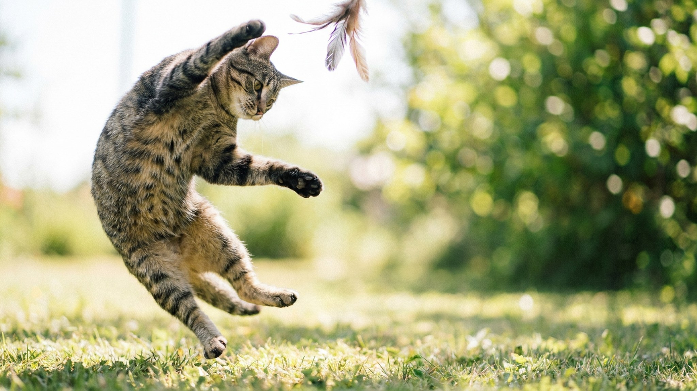

Взрослый тойбоб весит 2–2,5 кг и на всю жизнь остаётся размером с полугодовалого котёнка — это самая маленькая порода кошек в мире, и вывели её в России. Но за игрушечной внешностью скрывается крепкое здоровье, собачья привязанность и характер, который удивляет новых хозяев. Разбираем, откуда взялся тойбоб, чем он отличается от манчкина и как за ним ухаживать.
🐾 Экономьте на лишних визитах к врачу
Сначала спросите AI-ветеринара в AnimaLife — часто этого достаточно, чтобы понять, нужен ли визит к врачу.
Порода появилась в Ростове-на-Дону в 1980-х: заводчица заметила у обычной кошки котёнка с миниатюрным телом и коротким хвостом-помпоном и стала закреплять этот тип. Так родился тойбоб — «карманная» кошка с естественным коротким хвостом, как у курильского бобтейла, только в мини-формате.
Важно не путать тойбоба с манчкином. У манчкина укорочены лапы при обычном теле, а тойбоб — гармонично уменьшенная кошка нормального сложения с коротким хвостом. Его миниатюрность — не карликовость и не болезнь, а закреплённый природный признак, поэтому проблем со здоровьем из-за размера у породы, как правило, нет.
Тойбоб ведёт себя не как декоративная кошка, а как активный компаньон. Он ходит за хозяином из комнаты в комнату, встречает у двери, любит играть в апорт и охотно осваивает трюки — за «собачий» нрав породу и полюбили.
Тойбобы бывают короткошёрстными и полудлинношёрстными, но шерсть у обоих неприхотлива: достаточно вычёсывания раз в неделю, чаще — в линьку. Короткий хвост — естественный и не доставляет кошке дискомфорта, специального ухода он не требует.
Главная бытовая тонкость связана с размером: маленькой кошке легко переесть, поэтому за порциями и весом стоит следить внимательнее, чем за крупным котом, а рацион и его объём — обсудить с ветеринаром. В остальном порода считается крепкой; плановые осмотры и профилактика нужны такие же, как любой домашней кошке.
Это отличный выбор для квартиры, семьи с детьми и тех, кто впервые заводит кошку: тойбоб компактен, дружелюбен и не требует сложного ухода. Он подойдёт и тем, кто хочет активного, контактного питомца, но не готов к крупному коту. Единственное, чего тойбоб по-настоящему не любит, — оставаться надолго один: если вас часто нет дома, подумайте о втором питомце-компаньоне.
🐾 Всё о вашем питомце — в одном приложении
AI-ветеринар, дневник, напоминания о прививках и уходе. Установите AnimaLife — это бесплатно, в Telegram и MAX.
🐾 Понравился разбор?
Подпишитесь на канал — каждый день разбираем по одному тревожному симптому у кошек и собак: что в пределах нормы, а когда пора к врачу. Подпишитесь, чтобы не пропустить разбор, который может спасти здоровье вашего питомца.
Материал носит информационный характер и не заменяет очную консультацию ветеринара.